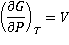

Water phases at Annapurna II, Nepal
The properties of all the known phases of water are described.
 Supercritical water
Supercritical water
 The ice phases
The ice phases
 Phase diagrams
Phase diagrams
 The phase diagram of water
The phase diagram of water
 The Clausius Clapeyron equation
The Clausius Clapeyron equation
'Corresponding to the abnormal behavior of the liquid at low pressures, and probably connected to it, the solid also shows abnormal behavior...'
Percy Bridgman, 1911 [2472]
Phase changes
Phase diagrams show the preferred physical states of matter at different thermodynamic variables, such as temperatures and pressure. Within each phase, the material is uniform with respect to its chemical composition and physical state. At typical temperatures and pressures on Earth (marked by an 'E' below), water is a liquid, but it becomes solid (that is, ice) if its temperature is lowered below 0 °C and gaseous (that is, water vapor) if its temperature is raised above 100 °C, at the same pressure. Each line (phase line) d on a phase diagram represents a phase boundary and gives the conditions when two phases may stably coexist in any relative proportions (having the same Gibbs free energy and identical chemical potential). Here, a slight change in temperature or pressure may cause the phases to abruptly change from one physical state to the other. Where three phase lines join, there is a 'triple point' when three phases stably coexist (having identical Gibbs free energies and identical chemical potentials), d but may abruptly and change into each other given a slight change in temperature or pressure.
The Gibbs phase rule states that if a system consists of C components and P phases existing in equilibrium, the number of degrees of freedom (F, like temperature or pressure) is given by F = C − P + 2. Under the singular conditions of temperature and pressure where liquid water, gaseous water, and hexagonal ice stably coexist (P = 3), there is a 'triple point' (F = 0) where both the boiling point of water and the melting point of ice are equal for a single component system (C = 1), like pure water. Four phase lines cannot meet at a single point. A 'critical point' occurs at the end of a phase line where the properties of the two phases become indistinguishable from each other, for example when, under singular conditions of temperature and pressure, liquid water is hot enough, and gaseous water is under sufficient pressure that their densities are identical (0.322 g cm−3 ). At temperatures above the critical temperature, a gas cannot be liquefied. Critical points are usually found at the high-temperature end of the liquid-gas phase line.
The phase diagram of water is complex,a,b,c,e,f [3921] having several triple points and one, or probably two, critical points. Many of the crystalline forms may remain metastable in much of the low-temperature phase space at lower pressures. An example of this is the metastable extension of the liquid phase line at low temperatures (< -21.985 °C ) through the ice III and ice II phase spaces, giving a metastable triple point (-32.7 °C and 273 MPa) that interlinks the three metastable equilibrium curves: ice Ih + ice IV, ice Ih + liquid and ice IV + liquid [3736]. A thermodynamic model of water and ices Ih, III, V, and VI [1320], and thermodynamic functions of the phase transitions [1658] have been described. The known ices can be divided, by cluster analysis of their structures [1717], into the low-pressure ices (hexagonal ice, cubic ice, and ice-eleven), the high-pressure ices (ice-seven, ice-eight, and ice-ten) and the others (found in the relatively narrow range of moderate pressures between about 200-2000 MPa). It is noticeable that most phase boundaries between the ices that share phase boundaries, particularly are parallel to the temperature axis, implying density-driven phase transformations [2465]; entropy-driven phase transformations, such as ice Ih-liquid water, show phase boundaries parallel to the pressure axis. All phases that share phase boundaries with liquid water (ices Ih, III, V, and VI and VII) have disordered hydrogen bonding. The phases with ordered hydrogen bonding are found at lower temperatures and are indicated in light blue below. The structural transformation conditions of some of these ices during compression have been described [1795]. As pressure increases, the ice phases become denser. They achieve this by initially bending bonds, forming tighter ring or helical networks, and finally including network interpenetration. This is particularly evident when comparing ice-five with the metastable ices (ice-four and ice-twelve) that may exist in its phase space. Note that, in the phase diagram below, only the stable phases are shown and that the vertical axis has a logarithmic scale for pressure, as the required pressures vary over more than ten orders of magnitude. Gibbs energy representations, densities, and phase lines for ice II, III, V, and VI have been reported [3832]. The SeaFreeze package allows the computation of the thermodynamic (phase boundaries, density, entropy, specific heat, isothermal bulk modulus, adiabatic bulk modulus, thermal expansivity, chemical potentials) and elastic properties of water and ice polymorphs (II, III, V, and VI) over the 0-2300 MPa and 220-500K range (covering the range of conditions encountered in hydrospheres in our solar system). The use of this package gives rise to some minor changes to some of the phase lines below. The phase diagram of water showing stable ice polymorphs relevant to water-rich planetary body interiors has been described [3832]
Detail of the water phase diagram
Mouse over the pressure border for D2O phase lines
The mean surface conditions on Earth, (also atmospheric conditions, Mars and Venus on mousing over Earth) are indicated. The complex central part of the phase diagram is expanded opposite. The critical point and the orange line in the ice-one phase space refer to the low-density (LDA) and high-density (HDA) forms of amorphous water (ice) [16]. Although generally accepted and supported by diverse experimental evidence [754a, 861], the existence of this second, if metastable, critical point is impossible to prove absolutely at present and is disputed by some [200, 618, 628, 754b, 1115]. The transition between LDA and HDA is due to the increased entropy and attractive van der Waals contacts in HDA, compensating for the reduced strength of its hydrogen bonding.
Positions of metastable and ordered ices, from [4290]
The high-pressure phase line between ice-ten (X) and ice-eleven (XI) [81] is still subject to experimental verification. The melting point line between supercritical water and high-pressure ice has been established [691, 2096]. Ice VII possesses higher and lower pressure forms [1428, 3509]. Phase diagrams of water at higher temperatures, up to 9000 K, have been proposed [1671, 3199]. The area of stability of ice-eighteen (XVIII) is given elsewhere Both the critical points are shown as red circles in the phase diagram above.
Phase diagram of water at extreme pressure and temperature
from [4362]
A phase diagram of water at extreme pressures (up to 160GPa) and temperatures (up to 5000 K) is available, see right, ([4362] also compares prior work). The stability regions for the two superionic phases, face-centered cubic oxygen atoms, fcc-SI, and body-centered cubic oxygen atoms, bcc-SI, are indicated. The data was obtained using synchrotron X-ray diffraction and optical spectroscopy measurements of water in a laser-heated diamond anvil cell. The densities of
Many properties of cold liquid water change above about 200 MPa (for example, viscosity, self-diffusion, compressibility, Raman spectra, and molecular separation), which may be explained by the presence of a high-density liquid phase containing interpenetrating hydrogen bonds. The chemical properties of water are also greatly changed at high temperatures and pressures due to the changes in dissociation, solubility, diffusivity, and reactivity due to decreasing hydrogen-bonding [1116].
Triple points occur where three phase lines join, and the three (stable) phases may coexist at equilibrium. As the water triple point (gaseous water:liquid water:ihexagonal ice) can be precisely reproduced in the laboratory, its temperature (originally defined in 1954 to be precisely 273.16 K), together with the absolute zero of temperature (0 K) initially determined the thermodynamic temperature scale and the size of the kelvin (up until 2019). At the triple point of water, small heat inputs or outputs, or small attempts at compressions or expansion, will cause the relative amounts of gas, liquid, and ice Ih to vary without actually changing the equilibrium temperature or pressure of the system; such that the temperature and pressure stabilize on the highly precise, invariant and reproducible triple point value, so long as gas, liquid, and ice Ih remain present.
| Triple points | MPa | °C | ΔH, kJ ˣ mol−1 |
ΔS, J mol−1 K−1 |
ΔV cm3 mol−1 | Ref. | D2O [717] | ||
|---|---|---|---|---|---|---|---|---|---|
| gas | liquid | Ih | 0.000611657 | 0.010 | 536 | 661 Pa, 3.82 °C [70] | |||
gas |
-44.9 | -165 | -22050 | 1833 | |||||
gas |
-50.9 | -186 | -22048 | ||||||
liquid |
-5.98 | -22 | 1.634 | ||||||
| gas | Ih | XI | 0 | -201.0 | 717 | 0 MPa, -197 °C | |||
| Ih |
0 | ||||||||
| liquid | Ih | III | 209.9 | -21.985 | 537 | 220 MPa, -18.8 °C | |||
liquid |
-4.23 | -16.9 | 2.434 | 1833 | |||||
liquid |
-3.83 | -15.3 | -0.839 | ||||||
Ih |
0.39 | 1.6 | -3.273 | ||||||
| XI | 89.6 | -198.1 | 3832 | ||||||
| 70 | -199.8 | 2300 | 80 MPa, -195 °C [2300] | ||||||
| Ih | II | III | 209.9 | -34.15 | |||||
212.9 |
-34.7 | 537 | 225 MPa, -31.0 °C | ||||||
Ih |
-0.75 | -3.2 | -3.919 | 1833 | |||||
Ih |
0.17 | 0.7 | -3.532 | ||||||
II |
0.92 | 3.8 | 0.387 | ||||||
| II | III | V | 355.5 | -23.75 | 3832 | ||||
| 344.3 | -24.3 | 537 | 347 MPa, -21.5 °C | ||||||
II |
1.27 | 5.1 | 0.261 | 1833 | |||||
II |
1.20 | 4.8 | -0.721 | ||||||
III |
-0.07 | -0.2 | -0.982 | ||||||
| II | VI | XV | 828.5 | -143.15 | 3832 | ≈ 0.8 GPa, -143 °C [1582] | |||
| liquid | III | V | 350.1 | -16.986 | 537 | 348 MPa, -14.5 °C | |||
liquid |
-4.61 | -18.0 | -0.434 | 1833 | |||||
liquid |
-4.69 | -18.3 | -1.419 | ||||||
III |
-0.07 | -0.2 | -0.985 | ||||||
| II | V | VI | 670.8 | -71,25 | 3832 | ||||
| ≈ 620 | ≈ -55 | 539 | |||||||
| liquid | V | VI | 632.4 | 0.16 | 537 | 629 MPa, 2.4 °C | |||
liquid |
-5.27 | -19.3 | -0.949 | 1833 | |||||
liquid |
-5.29 | -19.4 | -1.649 | ||||||
V |
-0.02 | -0.5 | -0.700 | ||||||
| VI | VIII | XV | 1582 | ≈ 1.5 GPa, -143 °C | |||||
| VI | VII | VIII | 2,100 | ≈ 5 | 8 | 1950 MPa, ≈ 0 °C | |||
| VI |
-0.09 | -o.3 | -1.0 | 1833 | |||||
| VI |
-1.20 | -4.2 | -1.0 | ||||||
| VII |
-1.10 | -3.9 | 0.0 | ||||||
| liquid | VI | VII | 2,216 | 81.85 | 537 | 2060 MPa, 78 °C | |||
| liquid |
-6.36 | -18.0 | -0.59 | 1833 | |||||
| liquid |
-6.36 | -18.0 | -1.64 | ||||||
| VI |
0.0 | 0.0 | -1.05 | ||||||
| VII | VIII | X | 62,000 | -173 | 538 | ||||
| super-critical fluid | VII | VII' | ~20,000 | ~800 | 3509 | ||||
| super-critical fluid | VII | X | 43,000 | >700 | 612a | ||||
| 47,000 | ≈ 727 | 612b | |||||||
| super-critical fluid | VII | XVIII | ≈ 40,000 | ≈ 1000 | 1572 | ||||
Putative phase diagram of a 'typical' liquid
a If water behaved more typically as a low relative molecular mass (molecular weight) material, its phase diagram might have looked somewhat like this (where 'x' marks ambient conditions on Earth). [Back]
b The metastable phases (Ice Ic, ice IV, Ice XII, and Ice XIII) do not belong in a phase diagram. However, Ice Ic (cubic ice) has been found in the hexagonal ice phase space below -80 °C, ice IV has been found within the ice-three, ice-five, and ice-six phase spaces, and Ice XII and Ice XIII have been found within the ice-two phase space. These phases may be stable for extended periods at low enough temperatures as there is insufficient energy available to overcome the necessary activation barriers. [Back]
c Note that phase diagrams originating at this site have been copied by various sources, including to and then from Wikipedia without proper citation (or inherent permissions) of their source. Such poor scientific etiquette is easy for me to detect and reflects poorly on these authors. [ Back]
But, where S is the entropy, and  where V is the volume
Therefore,
where L is the latent heat (enthalpy change) for the phase change. This is the Clausius-Clapeyron equation. It can also be stated as
dT/dP = TΔV/ΔH = ΔV/ΔS
where P, T, H, V, and S are the pressure, temperature, enthalpy, volume, and entropy. This may be extended to be
dT/dP=T(sign α2V2 - sign α1V1)ΔV/ΔH
where α represents the thermal expansion coefficients, for use with phases with negative expansion coefficients including the ice phase changes,
LDA Ic, HDA
Ic, HDA LDA, LDA
LDA, LDA HDA, III
HDA, III V, V
V, V VI, VI
VI, VI VII and VI
VII and VI VIII
VIII
[1147b]
When two or more phases are in equilibrium, the chemical potential of a substance is the same in each of the two phases and at all points in each of the phases.
μA = μB
Moving along a phase line
μA + dμA = μB + dμB
and
dμA = dμB
as dμ= -Sm dT + Vm dP (Gibbs equation) VAdP − SAdT = VB dP − SBdT
( VA− VB) ˣ dP = (SA- SB) ˣ dT
ΔV ˣ dP = ΔS ˣ dT
This gives the Clausius Clapeyron equation dP/dT = ΔS/ΔV = ΔH/TΔV
At a triple point, the Gibbs free energies of the three phases (G1, G2, G3) must be equal and the entropy and enthalpy (latent heat) changes for all three phase changes (1 2, 2
2, 2 3, 1
3, 1 3) at that point may be calculated, given the pressure, temperature () and volume changes. [Back]
3) at that point may be calculated, given the pressure, temperature () and volume changes. [Back]
e The phase diagram for heavy water (D2O) differs little from the diagram for H2O given the scales used in the diagram. A more accurate representation would be by shifting the temperature scale by about 3.6 K as most of the triple points for D2O are 3 - 4 K warmer than those for H2O (see above). The pressure differences are positive or negative but not significant given the logarithmic scale used. [Back]
f The phase diagram of water for negative pressure has been described [2666]. [Back]
Home | Site Index | Ices, introduction | Ice-Ih | Ice-Ic | Ice-Isd | II | III | IV | V | VI | VII | VIII | IX | X | XI | XII | XIII | XIV | XV | XVI| XVII | XVIII | Amorphous ice | LSBU | Top
This page was established in 2000 and last updated by Martin Chaplin on 5 November, 2021